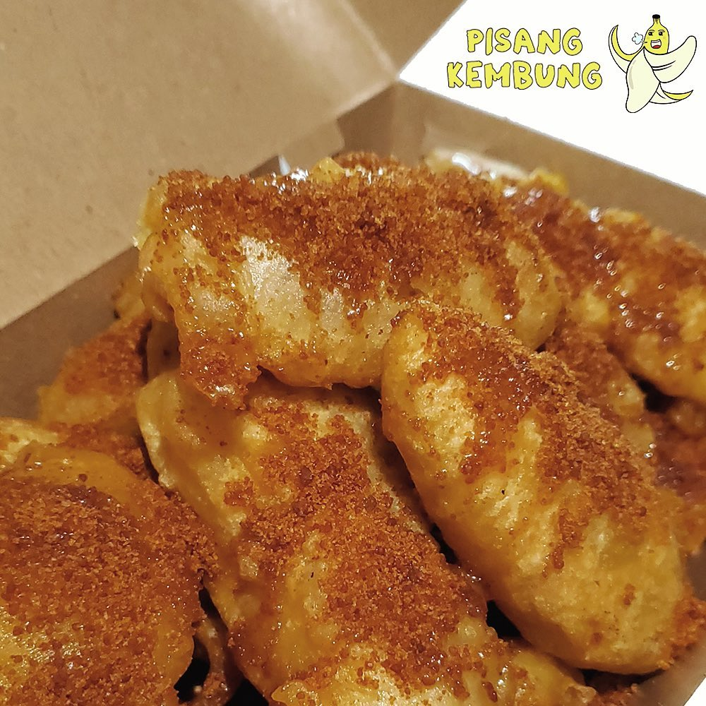
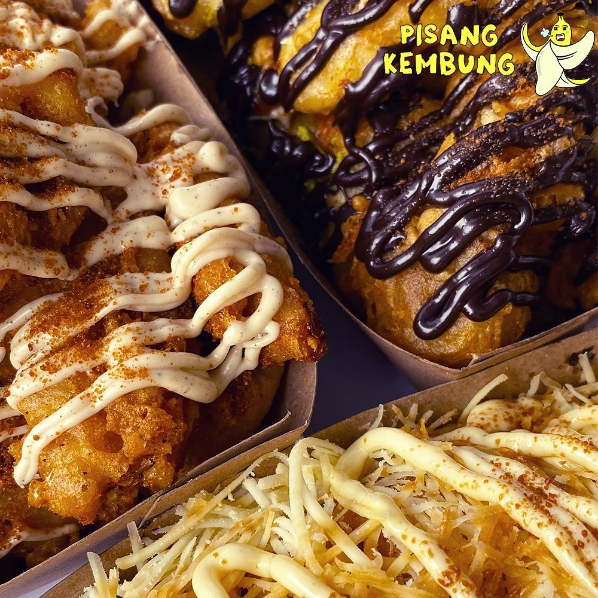
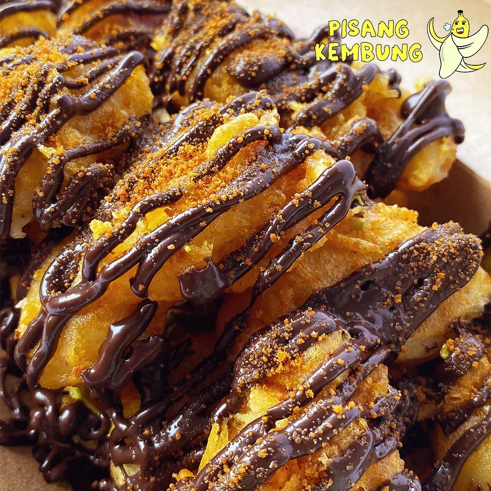

Apa itu Pisbung?
Pisang kembung adalah makanan unik yang memadukan pisang goreng krispi dengan beragam topping lezat, menjadikannya camilan favorit di Bandarlampung. Menggunakan topping Elmer Premium yang berkualitas, pisang kembung menawarkan pengalaman rasa yang menggugah selera. Dengan sudah memiliki empat cabang di Bandarlampung, setiap lokasi menghadirkan suasana hangat dan pelayanan ramah dari tujuh karyawan yang selalu siap menyambut pelanggan. Nikmati kelezatan pisang kembung yang sempurna ini dan rasakan kepuasan setiap gigitan!
Gmaps Tansen Gmaps Sukarame Gmaps Kedaton Gmaps Kemiling pisang kembung  pisang kembung  pisang kembung